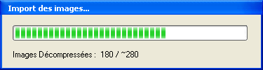

Décomposer la Technique
1. Sélection d'une Zone de Travail et passage en mode Analyse.
A
l'aide des curseurs de sélection  et
et  , spécifiez une zone de
travail réduite, correspondant au mouvement à décomposer.
, spécifiez une zone de
travail réduite, correspondant au mouvement à décomposer.
Lorsque la séquence est suffisamment courte, la bascule vers le mode Analyse est déclenchée.

La
durée à partir de laquelle la Zone de Travail bascule vers ce mode de
fonctionnement est paramétrable dans les Préférences spécifiques aux
Ecrans de Lecture/Analyse. La durée par défaut est fixée à 12 secondes.
Pour plus d'informations veuillez consulter Préférences Générales.
2. Décomposition du geste
Le
mode Analyse permet un contrôle plus fin de la vitesse de lecture. Vous
pouvez utiliser le curseur de position  pour naviguer dans la
séquence en temps réel.
pour naviguer dans la
séquence en temps réel.
Astuce: vous pouvez également utiliser la molette de la souris pour naviguer dans les images.